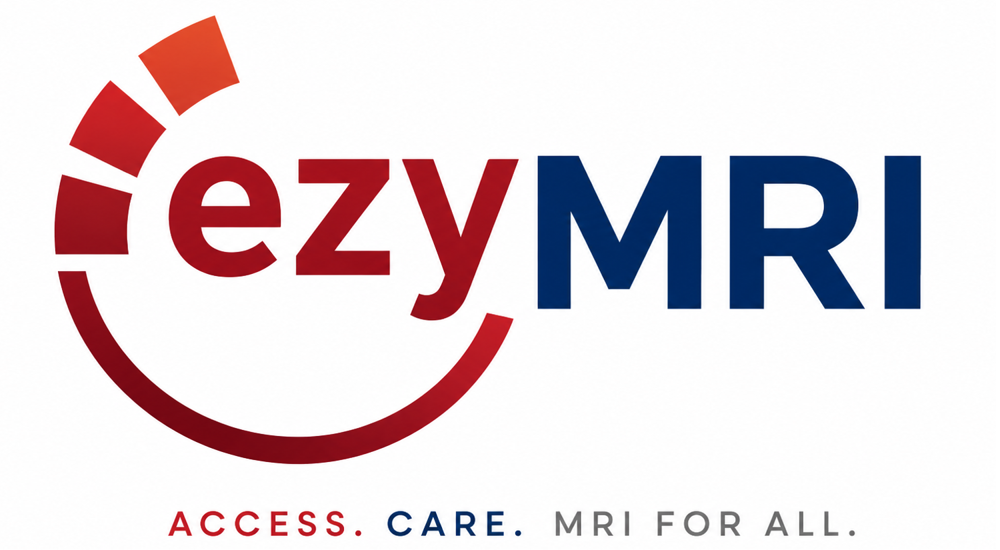
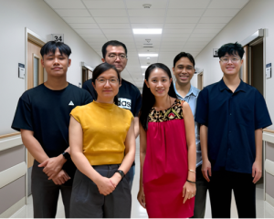

High Infrastructure Costs
Conventional MRI systems often require specialised RF shielding, reinforced infrastructure, high-power electrical systems, and complex site preparation.

ACCESS . CARE . MRI FOR ALL.
Contact Our TeamezyMRI
MRI is an essential diagnostic tool across many clinical conditions, yet access remains limited by high costs, infrastructure demands, and operational complexity.
Conventional MRI systems often require specialised RF shielding, reinforced infrastructure, high-power electrical systems, and complex site preparation.
Large capital requirements and substantial physical footprints restrict access for smaller healthcare providers.
Traditional MRI systems are large, fixed installations, limiting deployment beyond major hospitals and centralised imaging centres.
Limited MRI availability often forces patients to travel long distances for diagnostic imaging, delaying timely care.
The cost and complexity of traditional MRI deployment make imaging access difficult to scale across remote regions.
Limited MRI availability can contribute to longer wait times and delayed clinical decision-making.
Designed to simplify MRI deployment and expand access beyond conventional hospital environments.
Battery-powered mobility for flexible deployment across healthcare settings.
Operate without dedicated radio-frequency shielding rooms.
Use standard electrical power without specialised high-voltage installation.
No dependence on liquid helium, reducing operating cost and maintenance.
Suitable for decentralised healthcare settings and mobile care programmes.
Plug-and-play model using standard clinical networks and infrastructure.

ezyMRI advances accessible low-field MRI innovation through research, incubation, and practical healthcare-focused deployment solutions.
Read moreRising helium shortages expose MRI systems’ dependence on liquid helium for superconducting magnet cooling worldwide.
Read moreStay in the loop
Leave your details and we’ll help you learn more about accessible, portable MRI.